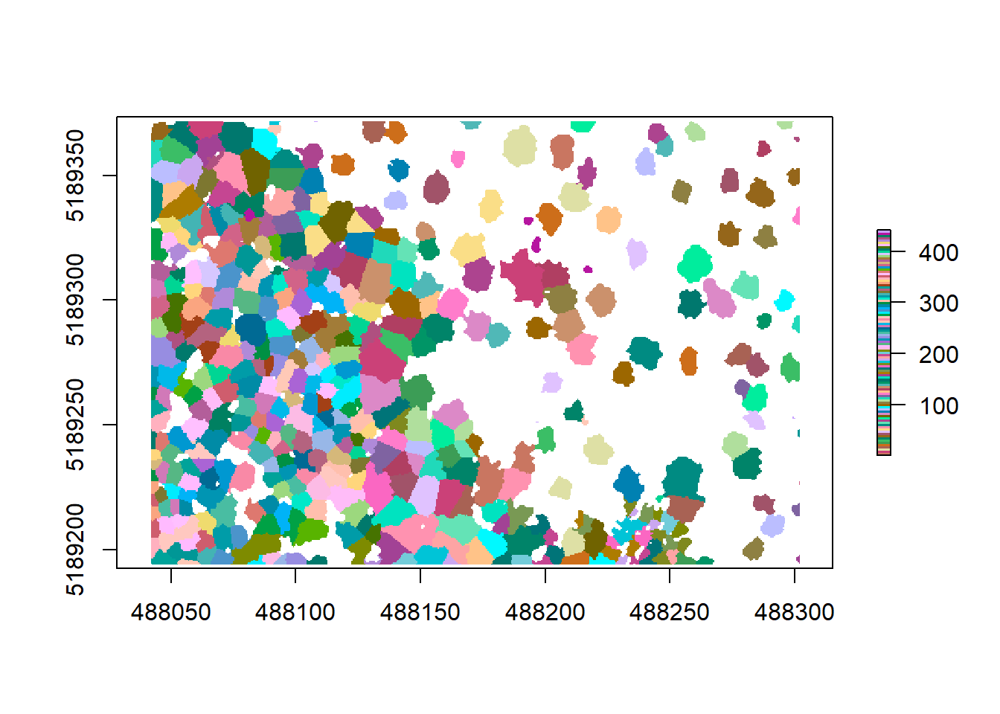

Chapter 9 Spatial tools for forestry and ecological applications

9.1 An introduction to processing LiDAR data in R
NOTE: This tutorial is based on lidR function Syntax pre version 3.0. Older function names have been depreceated, but are still working, thus not affecting the workflow of this tutorial. Nevertheless, befor you start working on your own data, you might want to check for updated function names and new functionalites in lidR 3.0 here.
9.2 Working with LiDAR data in R
lidR is a R package to process, manipulate and visualize LiDAR (and photogrammetry) pointclouds for forestry applications. Useful functionality includes the simple and memory-efficient plotting and visualization of data, computation of canopy height models (CHMs), tree segmentation and the extraction of tree metrics such as tree height and crown area. For more advanced users it additionally offers batch functionality, called cataloging, to process large LiDAR chunks, which otherwise would be very computation intensive.
This tutorial is a quick guide to getting familiar with the main functionality of lidR and based on the excellent package documentation that can be found here. You can find the github page for lidR at https://github.com/Jean-Romain/lidR and the package documentation at https://cran.r-project.org/web/packages/lidR/lidR.pdf.
We will be working with two example files (Example.las and drawno.laz), that you need to store in a data/ folder in your project (or working) directory. The files can be downloaded here. Please make sure that you have downloaded and stored the two files before beginning the tutorial. You also need to install the following packages:
We will also need the package EBImage for our tree segmentation, which is distributed as part of the Bioconductor project. To install, run the following code:
If this prompts you to update existing packages (Update all/some/none? [a/s/n]:) in the console, type n and hit enter. Once all packages are installed, we need to call them:
9.3 Step 1. Loading and visualizing pointclouds
For those familiar with R, loading and plotting pointcloud files will be easy: we are using simple read and plot syntax. lidR can load both .las and .laz file formats. Let’s read one of our example files and plot it:
Using print() will give us a bit of information about the file we have just loaded, for example on the number of points and point density.
## class : LAS (v1.2 format 1)
## memory : 11.5 Mb
## extent : 278200, 278300, 602200, 602300 (xmin, xmax, ymin, ymax)
## coord. ref. : NA
## area : 9996.22 units²
## points : 150.4 thousand points
## density : 15.05 points/units²We can see that this particular file has ~150,000 points with a point density of ~15 per unit. We can also see that there is no coordinate reference system (crs) associated with this file, which is why the unit is unknown. This might lead to issues later on, so always check that your raw pointcloud has a crs assigned, before starting to work with it. For the purpose of this tutorial, we can overlook this. Let’s visualize our pointcloud!
Figure 9.1: A new window will open and your plot will look something like this
You can change the color of your point cloud using colorPalette =. Make sure to close the previous plot window before plotting a new one. Let’s try a few options:
9.4 Step 2. Computing a canopy height model
Now that we have imported our LiDAR data in to R, we can start working with it using the functionality of the package. We want to compute a canopy height model (CHM) from our two example files. CHMs are rasterized versions of the forests captured using LiDAR. Each pixel value in this raster describes the height above ground. These CHMs are useful to get an idea about the forest structure of the area we are looking at. A CHM is derived from the pointcloud by subtracting a digital terrain model (DTM) describing the ground topography, from a digital surface model (DSM) describing points of the pointcloud above the ground:

Figure 9.2: The theory behind a CHM. Graphic: Colin Williams, NEON
9.4.1 Ground detection and normalizing a point cloud
While we could now go ahead and calculate a DSM and DTM from our raw pointcloud, lidR has built-in functions to make this easier for us. First of all, we need to normalize our pointcloud, so that all ground points are set to 0. Since you might have noticed that our example forest is already normalized, we will load our other example and start using lasground()
Do not mind the warnings that pop up. These are associated to the data structure but are not a problem in this case. Let’s have a brief look at what this piece of forest looks like:
You will see that the terrain here is a bit undulated. To normalize ground elevation, we first need detect ground points in this raw data and save it as a new pointcloud:
csf() is one of two ground segmentation algorithms, built into lidR. If you want more detail on what it exactly does, call ?csf in the console. We can visualize what this function has done with the raw data by plotting it and coloring it based on the classification we just ran:
Detected ground points are illustrated in blue, our trees in grey. You can check the same for our other example to confirm that this pointlcoud is already classified as we expected:
Now that the points are detected, we can normalize our pointcloud, which sets all ground points to an elevation of 0.
Again tin() is the spatial interpolation algorithm at work here. We can see what has happened by plotting our raw and normalized data and comparing the point clouds:
Figure 9.3: We can see that the right, raw data exhibits ground topography, while the right, normalized pointcloud is completely flat
We need the point cloud to be completely flat, to get the exact height of each tree above ground, without the influence topography might have on tree height. Now we are ready to start working on a CHM!
9.4.2 Building the initial CHM
To compute a CHM, we simply apply the grid_canopy() function to the normalized pointcloud, but need to give two extra arguments:
The first argument is the desired resolution of the output, in our case 0.5 meters. The second argument is the algorithm to compute the CHM. lidR has multiple algorithms built in, here we are using p2r() which attributes the height of the highest point found for each pixel of the output raster. Let’s look at our result:
Hmm, that doesn’t look too great yet. A lot of white space (empty pixels) indicates that we have pits resulting from the relatively low point density of this point cloud. These will lead to a lot of NA data later on, messing with our analyses, so we should aim at closing these pits by playing around with the arguments within the grid_canopy() function. A simple improvement proposed by Martin Isenburg in lastools (the underlying software to lidR) can be obtained by replacing each LiDAR return with a small disk. Since a laser has a width and a footprint, this tweak may simulate this fact. We add a subcircle of 0.2 diameter in our p2r() algorithm and can see what happens.
That looks much better already, but some pits still persist. Next we can try reducing the resolution a bit to counter these remaining empty pixels:
More pits closed, great! We might loose some detail here, as the pixel size is now larger, but we gain detail from replacing NA’s with height values. Note that playing around with these two parameters might take a while but eventually you may find the right approach that fits your data.
Another popular approach to avoid the empty pixel problem consists of the interpolation of first returns with a triangulated irregular network (TIN) and then rasterizing it onto a grid to create the CHM. For this we need to use the algorithm dstmin() in grid_canopy():
As explained by Martin Isenburg, the result has no more empty pixels but is full of pits because many laser pulses manage to deeply penetrate the canopy before producing the first return. In the end you might need to apply multiple algorithms and functions to reach the best results. Here is just an example of how this might look like, using multiple options to get a decent result for this pointcloud:
algo <- pitfree(c(0,2,5,10,15), c(0,1), subcircle = 0.2)
chm5 <- grid_canopy(raw_forest_norm, 0.5, algo) If you are interested in what you can do to improve your CHM, try ?grid_canopy and have a look at the options available. Once we are happy with our CHM, we can have a look at some simple height stats by running summary() for this chunk of forest:
## Z
## Min. -0.14362
## 1st Qu. 0.00000
## Median 10.24074
## 3rd Qu. 21.64095
## Max. 52.24510
## NA's 1808.00000Let’s test our knowledge and create a CHM for the other example file!
9.4.3 Challenge 1
Produce a CHM for our other example file with as little pits as possible using the functions and algorithm options described above. Keep in mind the initial resolution and point density and play around with the functions having these in mind. Remember that this pointcloud is already ground normalized, so your might need to adapt the code a bit…
Now that is a good looking CHM. Let’s get to using our CHM to segment individual trees as a basis of extracting tree metrics, without having ever to set foot into this forest!
9.5 Step 3. Individual tree segmentation
This step requires us to use a pitfree and smooth canopy height model. Smoothing is a post-process technique using the package raster that aims at removing sharp edges and pixels from the CHM by calculating focal (“moving window”) values for the neighborhood of focal cells using a matrix of weights. Let’s do this in one step to get our tree segmentation on the way:
# create a new chm to work with
algo <- pitfree(thresholds = c(0,10,20,30,40,50), subcircle = 0.2)
chm <- grid_canopy(raw_forest_norm, 0.5, algo) # smoothing post-process (here e.g. two pass (running focal twice), 3x3 median convolution)
ker <- matrix(1,3,3)
chm <- focal(chm, w = ker, fun = median)
chm <- focal(chm, w = ker, fun = median)
# check the smoothed raster
plot(chm, col = height.colors(50)) Comparing this raster to our previous ones, we can see that the ‘fuzziness’ around the edged has been removed. This will aid the next algorithm in finding the trees better. The segmentation using a CHM and normalized pointcloud is implemented in lidR using lastrees(). We will be using a watershed algorithm with a 4 meter threshold. A watershed transformation treats our raster like a topographic map and finds the lines in ‘depressions’ between our trees, treating the tree tops or crowns as ‘ridges’.
# segment the trees
algo <- lidR::watershed(chm, th = 4)
las <- lastrees(raw_forest_norm, algo)
# remove points that are not assigned to a tree
trees <- lasfilter(las, !is.na(treeID))Let’s have a look at the now segmented pointcloud, which we called trees:
Figure 9.4: Pretty, isn’t it? Each tree got a color assigned to it!
To check how well our tree segmentation performed, we can additional detect the position and center of each tree using tree_detection() and plot these on top of each other for quality control. To extract further structural metrics from our forest, we will need these treetops anyway.
The arguments that go into the lmf() algorithm describe 1. the length or diameter of the moving window used to detect the local maxima (ws), which corresponds to the crown width. This metric would need to be confirmed by doing some field measurements. And 2. we are using hmin to define the minimum height of a tree in this forest, which we’d also need to ground truth before running this. This is the threshold below which a pixel or a point cannot be a local maxima (and thus a treetop). For this one, we assumed hmin to be 10 meters. If you don’t have ground measurements to tune your algorithm, you need to try a few different values until you’re happy with the results.
We can even plot and evaluate our results in 3D:
Figure 9.5: The treetops as red dots on top of our segmented pointcloud.
To make sure that these results are saved, we should write all these files from the R environment to our hard drive. That will also allow us to e.g. further work with them in a GIS or in a pointcloud viewer such as CloudCompare. We will create a folder for outputs first, then save our smooth CHM as a raster file (.tif), our normalized pointcloud as a LiDAR file (.las) and the treetops as a shapefile (.shp):
dir.create('outputs')
writeRaster(chm, 'outputs/smooth_chm.tif')
writeLAS(raw_forest_norm, 'outputs/normalized.las')
writeOGR(treetops, '.', 'outputs/trees.shp', driver="ESRI Shapefile")We can now go on and compute some metrics from our segmented trees. We are today especially interested in extracting crown area and height for each of our segmented trees. First we need to derive a polygon for each crown that was segmented. For this lidR offers tree_metrics() and tree_hulls(), which work on the segmented pointcloud we derived earlier. We can then use dplyr to simply join both together to get a polygon shapefile containing crown area and height:
metric <- tree_metrics(trees, .stdtreemetrics)
hulls <- tree_hulls(trees)
hulls@data <- dplyr::left_join(hulls@data, metric@data)## Joining, by = "treeID"spplot from raster allows us to plot these hulls based on Z, which is the tree height for each of the crowns we identified. We can also plot all these together on our CHM to visually check accuracy:
We can see some of our crowns and tree positions don’t seem quite right, so there might be some room for improvement. But always know that using pointclouds and CHMs is just an approximation of the reality by applying algorithms and models, trying to simulate the measured forest as close as possible. So we will never detect 100% of the trees and we will never delineate them perfectly. Nevertheless, using pointclouds, we will be able to measure thousands of trees in a very brief period of time, while when carrying out forest inventories we can only measure a few dozen per plot, requiring lots of hard labor. A general work flow using ground inventories and LiDAR data together would this be to collect an amount of data needed to get an idea of the structure of your forest on the plot level and tune your LiDAR algorithms by measuring actual trees. Then you can extrapolate your field measurements to a whole forest or larger landscape using the pointclouds collected outside your plot area.
We want to get data on crown area and tree height together in a comprehensive table for further analysis. The rasterpackage will help us calculating the area and converting our polygon shapefile to a simple feature using sf will make it easier to work with the data.
sf treats a shapefile’s attribute table like a data.frame and as we can see, the tree_metrics simple feature already contains everything we need:
## Simple feature collection with 6 features and 8 fields
## geometry type: POLYGON
## dimension: XY
## bbox: xmin: 488041.5 ymin: 5189194 xmax: 488051.9 ymax: 5189222
## CRS: +proj=utm +zone=12 +datum=NAD83 +units=m +no_defs +ellps=GRS80 +towgs84=0,0,0
## treeID XTOP YTOP ZTOP Z npoints convhull_area area
## 1 332 488046.6 5189194 22.471 22.471 232 41.959 41.95850
## 2 347 488042.0 5189202 22.740 22.740 115 24.596 24.59595
## 3 215 488048.3 5189210 24.805 24.805 156 40.740 40.73950
## 4 351 488041.8 5189208 20.266 20.266 90 21.656 21.65552
## 5 271 488048.1 5189203 22.861 22.861 142 35.895 35.89526
## 6 353 488042.2 5189220 20.852 20.852 49 10.103 10.10254
## geometry
## 1 POLYGON ((488051.2 5189196,...
## 2 POLYGON ((488045.7 5189201,...
## 3 POLYGON ((488051.3 5189209,...
## 4 POLYGON ((488045.5 5189207,...
## 5 POLYGON ((488050.8 5189202,...
## 6 POLYGON ((488044.5 5189218,...Z is the height of each tree, identified by treeID and area is the exact area of each tree crown. You may see that convhull_area was already calculated by tree_metrics and corresponds to the area, so we could also use that variable instead and not add a new column. Let’s convert this from a sf to a table and remove all unnecessary information by selecting only the variables we are interested in:
## treeID Z area
## 1 332 22.471 41.95850
## 2 347 22.740 24.59595
## 3 215 24.805 40.73950
## 4 351 20.266 21.65552
## 5 271 22.861 35.89526
## 6 353 20.852 10.10254We can now also save the polygon shapefile of our crowns, to have everything ready for GIS processing or inspection. Additionally we want to save our metrics table as a .csv.
9.5.1 Delineating the crowns
Now the hulls are great, but for some applications we might actually need to know the exact shape of each tree crown, rather than its approximate hull, for example when studying crown cover or leaf area index (LAI). We can delineate crowns in more detail working directly on the CHM, without the need of using the pointcloud any longer, after we derived the canopy height model. We can apply watershed() directly to the CHM:

Now that we have a new raster called crowns where each tree is its own object, we can polygonize it to extract the contours and thus the more precise tree crowns (Note that this might run for a while as it is quite computing intensive):
contour <- rasterToPolygons(crowns, dissolve = TRUE)
plot(chm, col = height.colors(50))
plot(contour, add = T)
plot(treetops, add = T)Before we save this, we need to make sure all our data has the same spatial projection. We can do so using crs().
## CRS arguments:
## +proj=utm +zone=12 +datum=NAD83 +units=m +no_defs +ellps=GRS80
## +towgs84=0,0,0## CRS arguments: NAUnfortunately rasterToPolygons() does not assign a coordinate reference system, so we have to do so ourselves. While we’re at it, let’s also transform this to the sf format:
Next we can save the delineated polygons:
Again we want to test our knowledge and apply what we’ve just learned to the other example file.
9.5.2 Challenge 2
Detect trees and treetops in our other example file based on the derived CHM and normalized pointcloud and plot smoothed CHM, hulls and detected treetops on top of one another

9.6 Additional analysis: Computing a digital terrain model (DTM)
For many applications and studies, it is important to have detailed topographic data to e.g. assess slope, aspect or potential for water runoff in the ecosystem you’re studying. As LiDAR data penetrates through the canopy and captures laser returns from the ground as well, we can use the data not only to look at above ground structure, but also derive very high resolution digital terrain models (DTMs) that may be helpful in our analysis. Do to so, we are using the classified pointcloud that has ground points detected (which we named raw_forest_ground). grid_terrain() interpolates the ground points and creates a rasterized digital terrain model. The algorithm uses the points classified as “ground” to compute the interpolation.
## Registered S3 method overwritten by 'xts':
## method from
## as.zoo.xts zoo## Z
## Min. 312.7800
## 1st Qu. 324.2830
## Median 329.7095
## 3rd Qu. 334.8963
## Max. 347.8690
## NA's 8.0000What you can see when plotting is the topography of the ground under the trees in a unit of meters above sea level (which is derived from the coordinates of each point). We can see that our elevation varies between 313 to 348. The second argument of the function is again the resolution, which we set to 1 (1x1 m). This is an amazingly high resolution, when you think that the next best (free) DTM available from the Shuttle Radar Topography Mission is 30x30 meters. Very high resolution DTMs can be used for detailed analyses of stream flow in hydrological applications, geomorphology or modeling soil wetness with Cartographic Depth to Water Indexes (DTW-index). We are using another algorithm here (kriging) that applies a KNN (k-nearest neighbor) approach, commonly used in DTM creation. We can plot our crowns on top to see where the trees are distributed and how topography might be influencing e.g. the height or crown shape of trees here:
We can save our dtm the same way we saved our CHM before, using writeRaster(). lidR has some integrated LiDAR pointclouds to play around with, that might help illustrate this a bit better. Let’s look at one that has more depressions in the form of lakes, using a different algorithm as illustration:
LASfile <- system.file("extdata", "Topography.laz", package="lidR")
las <- readLAS(LASfile)
dtm1 <- grid_terrain(las, algorithm = knnidw(k = 6L, p = 2))
plot(dtm1)lidR also allows to plot DTMs in 3D:
Figure 9.6: The example data dtm in 3D
Another integrated dataset can be called liked this. Feel free to use these to practice creating CHMs, segmenting trees, extracting tree metrics and calculating a DTM.
Let’s try this on the other example too!
9.6.1 Challenge 3
Create a digital terrain model for the other example (forest) and plot the detected treetops on top of the final DTM. Finally, save your DTM as a .tif file to your outputs folder!
9.7 Wrapping up
Good job everyone. You have learned how to get your LiDAR data into R and prepare it for further analysis by detecting ground points and normalizing the clouds. Doing that, we were able to derive a canopy height model and learned about how to improve it’s accuracy. Having derived that, we were able to extract metrics for each tree and delineate our crowns to look at single-tree attributes within our example forest. You were also able to compile your inventory data as a comprehensive table and save everything for further processing. Additionally we derived a very detailed digital terrain model. What follows now can be manifold, Maybe you are interested in the exact location and elevation above sea level of all your trees detected. raster allows you to easily extract data from a raster using a spatial vector such as a shape file by simply using extract:
elevation<-extract(dtm, treetops, cellnumbers = T, df=T)%>%rename(treeID = ID, elevation = Z)
elevation<-cbind(elevation,coordinates(dtm)[elevation[,2],])
elevation<-elevation%>%select(-2)
head(elevation)## treeID elevation x y
## 1 1 335.211 488042.5 5189193
## 2 2 335.021 488046.5 5189195
## 3 3 335.255 488042.5 5189203
## 4 4 334.875 488040.5 5189208
## 5 5 334.401 488043.5 5189210
## 6 6 333.578 488044.5 5189222You could think of other uses, e.g. if you have raster layers describing climatic variables of your forest, you could get precise data for each of your trees and see how it might have affected their growth. You can also use the delineated crowns to extract all pixel data from e.g. multispectral imagery of the crown area of your trees to try and model forest nutrition to make assumptions on the quality of the forest for certain arboreal species.
If you have any questions or comments on this tutorial, feel free to write me an email and I’m happy to try and help out. I have a few other (more basic) tutorials compiled like this one if you are interested.
Good luck with any future LiDAR adventures in R!
9.8 Solutions to the challenges
9.8.1 Challenge 1
9.8.2 Challenge 2
#data to use:
#forest_chm
#forest_norm
# segment the trees
algo <- lidR::watershed(forest_chm, th = 4)
las2 <- lastrees(forest_norm, algo)
trees_forest <- lasfilter(las2, !is.na(treeID))
plot(trees_forest, color = "treeID", colorPalette = pastel.colors(100))
# find treetops and hulls
treetops_forest<-tree_detection(forest_norm, lmf(ws = 5, hmin = 10))
metric_forest <- tree_metrics(trees_forest, .stdtreemetrics)
hulls_forest <- tree_hulls(trees_forest)
hulls_forest@data <- dplyr::left_join(hulls@data, metric@data)
plot(forest_chm)
plot(hulls_forest, add = T)
plot(treetops_forest, add = T)